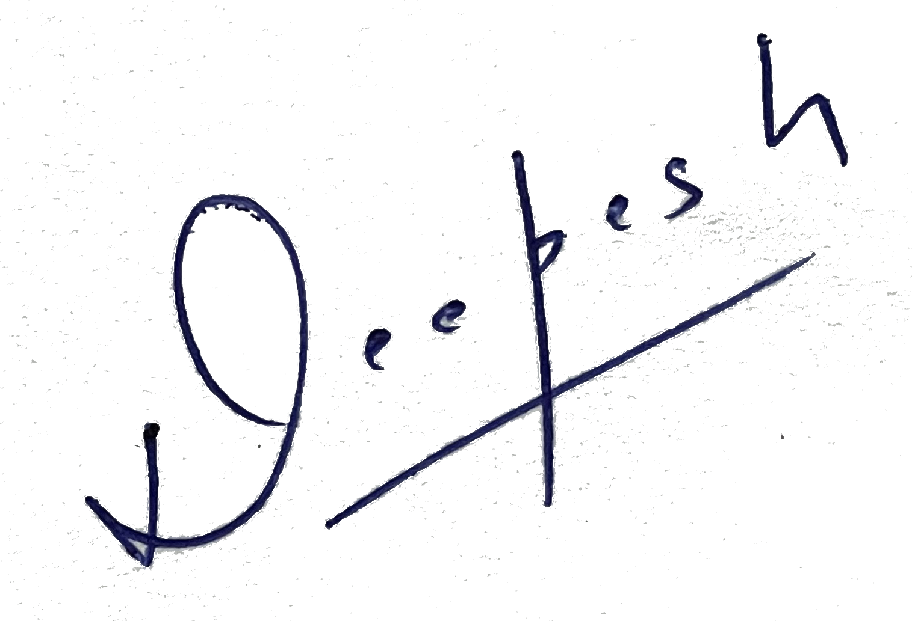

<body class="bubble">

<canvas id="canvasbg"></canvas>
<canvas id="canvas"></canvas>

<!-- Your logo on the top left -->
<a href="#" class="logo-link" title="back home">

  

</a>

<div class="content">

  <div class="content-box">

    <div class="big-content">

      <!-- Main squares for the content logo in the background -->
      <div class="list-square">
        <span class="square"></span>
        <span class="square"></span>
        <span class="square"></span>
      </div>

      <!-- Main lines for the content logo in the background -->
      <div class="list-line">
        <span class="line"></span>
        <span class="line"></span>
        <span class="line"></span>
        <span class="line"></span>
        <span class="line"></span>
        <span class="line"></span>
      </div>

      <!-- The animated searching tool -->
      <i class="fa fa-search color" aria-hidden="true"></i>

      <!-- div clearing the float -->
      <div class="clear"></div>

    </div>

    <!-- Your text -->
    <h1>Oops! Error 404 not found.</h1>

    <p>The page you were looking for doesn't exist.<br>
      We think the page may have moved.</p>

  </div>

</div>

<footer class="light">

  <ul>
    <li><h1><a href="#">Back to Home</a></h1></li>

  </ul>

</footer>

<!-- ///////////////////\\\\\\\\\\\\\\\\\\\ -->
<!-- ********** jQuery Resources ********** -->
<!-- \\\\\\\\\\\\\\\\\\\/////////////////// -->

<!-- * Libraries jQuery and Bootstrap - Be careful to not remove them * -->
<script src="js/jquery.min.js"></script>
<script src="js/bootstrap.min.js"></script>

<!-- Bubble plugin -->
<script src="js/bubble.js"></script>

</body>
